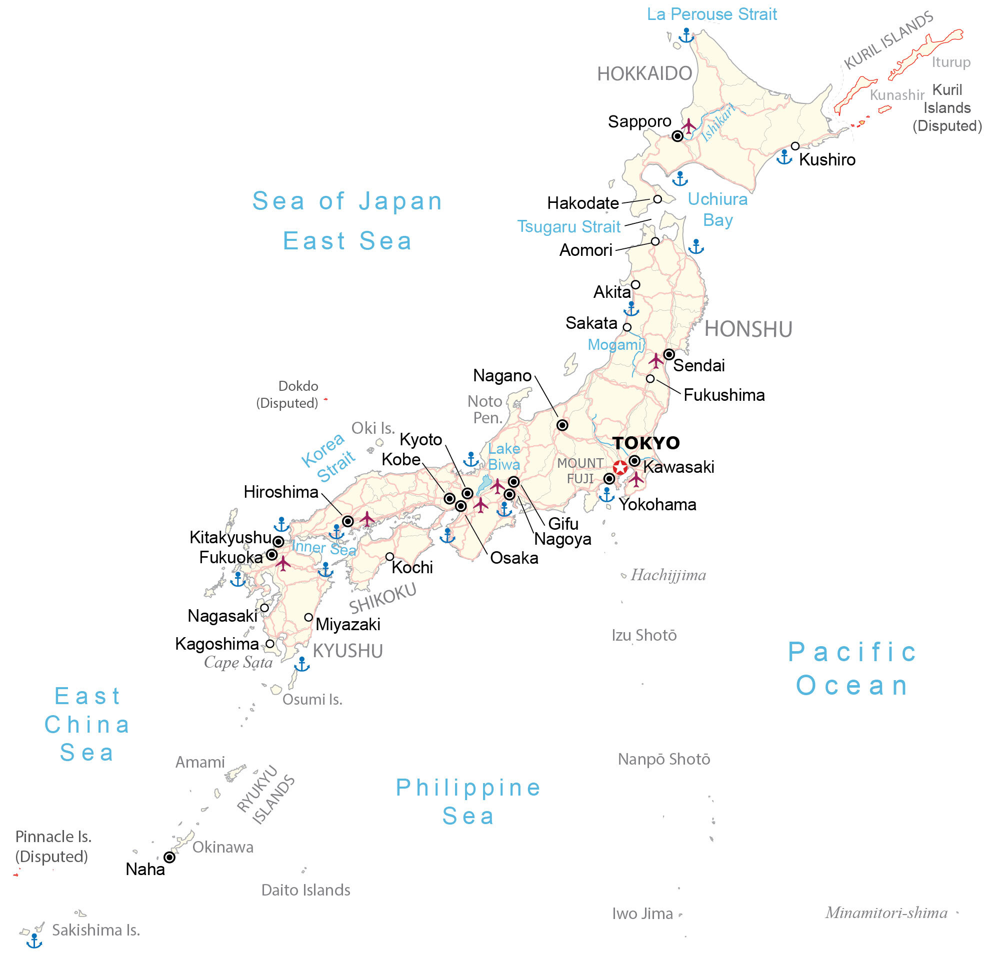
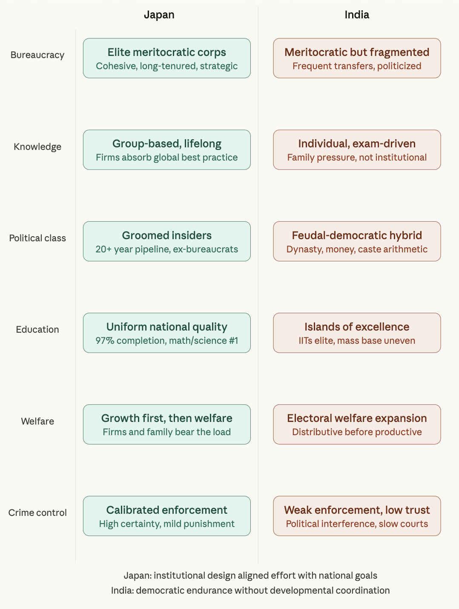
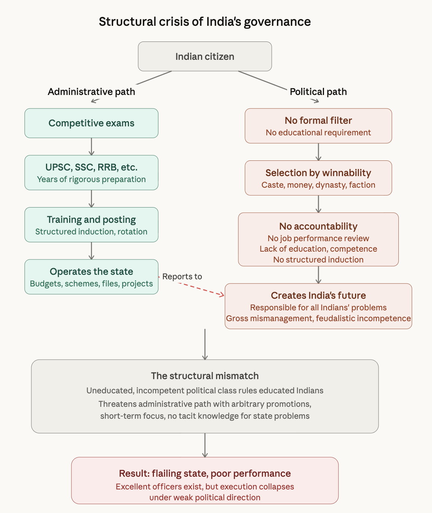

flowchart TD
A["Name problem"] --> B["Assign institution"]
B --> C["Pilot"]
C --> D["Measure outputs"]
D --> E{"Worked?"}
E -- Yes --> F["Scale"]
E -- No --> G["Revise / shut down"]
G --> C
classDef box fill:#d9d9d9,stroke:#222,color:#000,font-size:14px;
classDef decision fill:#f0f0f0,stroke:#222,color:#000,font-size:14px;
class A,B,C,D,F,G box;
class E decision;
Japan as No.1 by Ezra Vogel
Reading for India: Institutions, execution, and the unfinished task of Indian reform
Industrialization
Japan
India
USA
Sociology
Modernization
Abstract
This essay uses Ezra Vogel’s institutional analysis of Japan as No.1 to examine India. It argues, India’s deepest problem lies in the mismatch between a meritocratic administrative system and an insufficiently filtered political class, producing a state that often falters in execution, coordination, and long-term governance. It further argues that India’s path forward requires structural reform of the political class itself and advances a theory for executing reforms in India using clearer responsibility, stronger institutional accountability, transparent political recruitment, and a disciplined problem-solving framework that pilots, measures, revises, and scales what works.

0.1 Introduction
Earlier, I had written a few pieces on Japan’s industrialization and modernization. I then came across this bestselling book from the 1980s about Japan. Ezra Vogel was the Henry Ford II Professor of the Social Sciences. He was one of America’s foremost authorities on East Asia. Ezra also contributed other masterpieces such as Deng Xiaoping and the Transformation of China, The Park Chung Hee Era : The Transformation of South Korea. They are highly popular, accessible to any reader.
In some of my earlier posts, few readers shared how Japan’s success was due to the people’s hardworking character or their culture. However, these are not enough to explain the entire country’s massive modernization. Japan had built many institutions, reformed structurally during Meiji Era, that allowed much of the fundamental changes for their society.
As an Indian, I am wondering about works that distill the know-how, advances, ways of organization, comparing political systems around the world and then recommending them to India. It might benefit India in numerous ways. In these notes and reflections, I sketch some possible lessons for India.
1 What Vogel learned from Japan?
Vogel says Japan’s success is due to deliberate institutional design with strong organization, capable bureaucracy, industrial policy, coordinated planning, good education, and systems that aligned private effort with national goals for economic development [1]. Japan, despite scarce natural resources, had become better than the United States at handling many core problems of modern society, including industrial competitiveness, governance, education, welfare administration, and crime control, and that Americans should seriously study those successes instead of assuming they have nothing to learn from a non-Western country.
Japan as No.1: Lessons for America
1.1 Themes from Ezra’s Book Chapters
- The Japanese Challenge
- A Mirror for America
- The Japanese Miracle
- Japanese Success
- Knowledge: Pursuit and Consensus
- The State: Meritocratic Guidance and Private Initiative
- Politics: Higher Interests and Fair Shares
- The Large Company: Identification and Performance
- Basic Education: Quality and Equality
- Welfare: Security without Entitlement
- Crime Control: Enforcement and Public Support
- American Response
- Lessons: Can a Western Nation Learn from the East?
1.2 Japanese Challenge:
In 1976, Ezra is reflecting America’s two centuries of Independence Day [1]. He is asking to reflect and learn from Japanese success. He’s lamenting that many Americans are not taking interest in learning from Japan, moreover, many Japanese after their foreign study tour are lamenting that they are not learning anything new from American institutions. America’s political institutions were designed about two centuries ago, for pre-modern agriculture society, meanwhile, Japan had few moments in their history to re-examine and reform their institutions, one from 1868 and another after World War 2, where they committed to apply the best, considering strengths and weakness of existing institutions, reshaping them to consider future needs.
For India, I believe the question is not how do we become Japan, the question is how do we create processes, institutions for Indian systems that learns the way Japan learned and additionally learning from America, Canada, England, Germany, Russia, other best practices from around the globe. These systems or questions hasn’t been thought for entire India. India requires real execution, output that is more than slogan.
The first reason Ezra gives is the institutions in Japan, that were modeled after the West, not only that, they were carefully designed in a way that suited Japan’s needs. Second reason is that Japan drew upon its own institutions and recombined different traditions. Third is Japan started with no resources, unlike the US, which started with abundant resources, the polices were shaped from this perspective, limited government, decentralized decision making, yet as time passed, US grew more, the government changed, And for Japan as well, the social conditions. In 1868, with over two hundred fifty local lords, Japan had more difficulties in responding to the competition of other nations than America did in 1776. Japan pioneered developing foreign policy to compete at the global markets. The fourth reason is the quality of institutions are successful in political and social sphere as well. Japanese institutions may not ensure even Japanese success decades from now, because the Japanese are highly vulnerable to world energy shortages, protectionism against Japanese ex- ports, and growing competitiveness from developing countries with lower labor costs.
1.3 Japanese Miracle
The Author wrote this book in 1980s [1], so during this time period, population of Japan was 115 million, It’s 2026 and the population [2] is around 126 million [3]. In terms of size, Japan would be fifth largest size state in the U.S. As Japan as no natural resources, especially for energy, no iron ore, no petroleum, no coal, or other mineral resources; Japan is depended on imports for eighty five percent of its energy consumption. It imports more timber than it produces from North America.
In 1952, The Gross National Product of Japan was only 1/3rd of France or the United Kingdom. However, By 1970s, the Japanese GNP was as large as The United Kingdom’s and France’s combined and more than half the size of America’s. Japan was producing as much steel as United States, and by 1978, among the world’s twenty two blast furnace steel, fourteen were in Japan. Japanese steel outcompeted American steel due to higher productivity and modernization. Making good use of its comparative advantage first in labor costs, then in economies of scale, modern technology, and organization, Japan built up competitive industries in field after field.
In the early 1950s, Japanese consumer electronics like radios, tape recorders, and hi-fi systems were inferior to American products, but within a couple of decades, they dominated global markets. Watch industry: Japanese watchmakers (like Seiko) overtook the once world-leading Swiss industry.
Motorcycles: The British motorcycle industry was nearly wiped out by Japanese brands such as Honda, Yamaha, Suzuki, and Kawasaki; Harley-Davidson remained America’s only major non-Japanese competitor. Cameras and optics: Japanese manufacturers (Canon, Nikon, Minolta, etc.) replaced Germany’s pre-WWII leadership in cameras and optical instruments. Musical instruments: Yamaha’s pianos outsold American brands like Steinway by the 1970s; Japanese firms also excelled in making Western flutes (e.g., Muramatsu).
In 1958: Japan made under 100,000 cars. In Early 1970s: Volkswagen dominated U.S. imports. Late 1970s: Toyota, Nissan (Datsun), and Honda overtook Volkswagen in U.S. sales. 1977: Japan exported about 4.5 million cars and about 2 million sold in the U.S., while the U.S. exported very few—only about 15,000 cars to Japan. Japan even restricted its exports voluntarily to avoid trade friction.
Other manufactured goods: Japan became globally competitive in bicycles, ski gear, snowmobiles, ceramics (“cut pottery”), and even everyday items like zippers. Shipbuilding: By the late 1970s, Japan produced ships 20–30% cheaper than European ones and accounted for about half of world ship output, even after oil-crisis cutbacks. The success was explained in terms of cheaper labor in Japan. However, Japanese wages were slightly higher than those in the United States. The technological edge was higher in Japan, one Japanese worker could produce about one thousand English pounds worth of cars every nine days, Britain’s Leyland Motors, to produce the same value a worker took forty-seven days.
Japan’s manufacturing productivity far outperformed Europe’s by the mid-1970s, Japan began challenging the U.S.. A Japanese research official admitted privately that the U.S. had become to Japan what Japan’s prewar colonies once were, a supplier of raw materials and food to a superior industrial power. By the late 1970s, Japan had become not only the world’s most dynamic industrial and trading power but also a high-wage consumer economy. Its firms voluntarily limited exports to calm U.S. protectionism, yet the underlying story was clear, Japan’s productivity, trade networks, and capital strength far outpaced America’s declining industrial competitiveness.
Japanese households led the world in ownership of TVs, cameras, and video recorders, even surpassing America in absolute numbers of VCRs. Japan’s rail network, especially the Shinkansen (bullet train) linking Tokyo and Kyoto (opened 1964), provided faster, more comfortable service than any in the United States or Europe. By the late 1970s, Japan had not only achieved industrial supremacy but was also becoming a technologically advanced, orderly, and high-consumption society, rivaling or surpassing the West in comfort, efficiency, and innovation while maintaining low crime and strong social cohesion. While Japan’s economic power had outpaced Western Europe’s, European nations still enjoyed greater cultural prestige. America still led in Western art, music, and Nobel Prizes, though the author notes that Japanese scientists and writers may be underrecognized. Japan also had issues such as Overcrowding, Mediocre universities, Ethnic and social discrimination against Koreans and burakumin, Bureaucratic inefficiency as the Narita Airport protests, Corporate arrogance toward public complaints. Ezra emphasizes that these faults don’t define Japan’s achievement, He urges Americans to look beyond stereotypes and learn from Japan’s institutional successes.
1.4 Knowledge Pursuit and Consensus
The group quest for knowledge explains the Japanese success [1]. Learning is permanent, group activity. Whenever two people are together, the one imparting information is accepted as the teacher, and the listener becomes the student. Everyone is expected to be a student part of the time, and a good student is admired at any age. The good student displays modesty, humility, persistence, and forbearance.
In a group setting, if the student thinks the teacher less than fascinating, he may doze discreetly; if he finds the teacher less than outstanding, he conceals it. Japanese people spend more time reading and learning than Americans, and a larger share of their media (newspapers, magazines, TV) is designed to inform and teach, not just entertain. Japan’s learning culture, routine, group‑based, humble, and lifelong, turns everyone into a student and a teacher, and that this pattern is central to Japanese institutional success.
Adults frequently ask, “What can I learn from this person/situation?”, and millions of Japanese who travel abroad seek new ideas they can apply at home. Study is treated as a social activity, not just solitary homework; even when reading alone, people later discuss what they read with peers. Nearly all large Japanese companies run study groups for all employees, If a company can’t provide specialized training, it encourages employees to take correspondence courses or take short leaves to attend external programs.
The six big general trading companies (Mitsubishi, Mitsui, Sumitomo, Marubeni, Itoh, Nissho Iwai) have the world’s most extensive commercial information networks. Many Japanese research institutes and think tanks do less “original” basic research than Western ones, but they focus on, sweeping in the best existing knowledge from around the world, summarizing multiple useful approaches without pushing a single dogma. The Japanese have high ambition and willingness to imitate and adapt best practices from abroad.
1.5 The State: Meritocratic Guidance and Private Initiative
In terms of work ethic, Japan’s elite bureaucrats [1] form a highly dedicated cadre within ministries, numbering around 500 generalists per ministry, organized by entry-year seniority. They maintain grueling schedules, arriving late but departing after 9 or 10 PM, working Saturdays without pay, and even sleeping at the office during peak demands, yet accept modest salaries, offices, and perks compared to private-sector peers, retiring by their mid-50s. This group cohesion stems from a shared mission, peer accountability, and rotation through key roles (regional, overseas, and internal posts every 2-4 years), fostering expertise and unity against political interference.
The system narrows top talent progressively: promising elites gain prestigious secretariat roles in their 30s, division chiefs emerge around age 50, and a single administrative vice-minister (chosen by consensus) wields ultimate power, with peers transitioning to private firms or politics. Cross-ministry ties, built from university and school bonds, enable seamless coordination, contrasting sharply with U.S. reliance on inexperienced political appointees, whom Japanese view as risky outsiders lacking institutional depth. Prime ministers follow a parallel grooming path via Liberal Democratic Party factions, requiring 20+ years in roles like party secretary-general and key ministries (Finance, MITI, Foreign Affairs).
Ex-bureaucrats dominate due to their operational savvy, ensuring policy continuity and harmony with ministries over charismatic but untested leaders. This insider selection prioritizes predictability and expertise, avoiding disruptions from elections or outsiders. Shifting to the private sector, Japan’s bureaucracy emphasizes encouragement over regulation, with ministries like MITI issuing long-range visions and administrative guidance to foster competitiveness. MITI acts as an overanxious mother, pushing mergers, modernization cartels, tech imports, and resource allocation while minimizing direct subsidies or state ownership—keeping taxes low, 18-22% of GNP, and defense under 1%. Cooperation thrives via intimate business ties, superior information, and implicit leverage (e.g., loans, permits), aligning firms with national goals without coercion.
Japanese bureaucrats maintain authority, [1] post-WWII without becoming isolated from society, unlike in France, thanks to protections from business leaders and politicians who rely on their expertise. While they can appear aloof or demanding, they lack coercive power and depend on voluntary private-sector cooperation, which hinges on public trust in their competence. Press Clubs in each ministry, staffed by rotating reporters from major media, ensure transparency by tracking decisions closely and publishing ministry reasoning, preparing the public for outcomes. Newspapers conduct polls tying coverage to public opinion, while pseudonymous weekly critiques and editorial challenges allow criticism without rupturing official ties.
Diet interpellation subjects bureaucratic legislation to opposition scrutiny, forcing bills to be defensible and delaying flawed ones, as seen in Finance Ministry relief upon budget passage. Deliberative councils (shingikai) of experts, interest groups, and neutrals debate options publicly, compelling bureaucrats to craft justifiable proposals even if they shape outcomes. Central direction balances local action through tax equalization grants, enabling flexible local programs while enforcing national standards in education, welfare, and transport. The Tanaka Plan, despite inflation setbacks, advanced redistribution to less-crowded areas via incentives, fostering metropolitan integration and reducing U.S.-style state inconsistencies.
Japan’s centralized authority enables integrated metropolitan planning, allowing transport systems to span broader areas and facilities to be distributed equitably under national guidelines, while equalizing tax burdens across rich and poor communities for greater homogeneity. Japanese decision-making, termed nemawashi or “root binding,” involves bureaucrats carefully consulting all stakeholders over time to secure understanding and buy-in before finalizing policies, much like untangling and binding a tree’s roots for transplanting. This process ensures broad cooperation without coercion, accommodating dissenting groups through future considerations, thanks to stable bureaucratic leadership that outlasts political shifts.
Nemawashi prioritizes thorough preparation over speed, allowing groups time to adjust and voice concerns via press clubs and deliberative councils, resulting in evasive yet maximally consensual outcomes rather than crisp directives. Western observers may find the deliberation slow, but Japanese leaders value its long-term effectiveness, as seen in the 1970s energy crisis: while the U.S. Carter plan faltered without support, Japan’s inclusive approach stabilized petroleum imports amid growth by boosting conservation, gasoline efficiency, and alternatives like solar. This contrasts with top-down Western models, where orders often meet resistance; Japan’s method minimizes disruption, binding most “roots” for smooth policy execution despite occasional delays.
1.7 The Large Company: Identification
Japanese workers’ pride in their work and loyalty to their company are reflected in their capacity to produce goods that are not only competitive in price but reliable in quality [1]. Some workers, especially younger workers in small plants, may be alienated from their company, but compared to Americans, they are absent less, strike less, and are willing to work over- time and refrain from using all their allotted vacation time without any immediate monetary benefit. The average Japanese laborer may accomplish no more than a loyal hard-working. American counterpart in a comparable factory, but loyalty to the company is typically higher and hard work more common.
The Japanese company system as we know it today began to emerge only late in the nineteenth century. Craft shops, with paternalistic masters and their apprentices and journey men, date back centuries, but these feudalistic shops are not totally different from the kind of paternalistic shops of Paul Revere’s America or preindustrial Europe.
Modern Japanese corporate paternalism drew on the recent feudal past, but it emerged in industries that borrowed modern industrial technology and organization and required a high level of skill. In new industries with lower skill require ments like textiles, no long training was necessary. Here, young, dexterous employees were, if anything, more useful than older experienced ones with less dexterity, and young women were at least as agile as men. Late nineteenth- and early twentieth-century Japanese textile manufacturers, therefore, offered wages based on a piece rate system without significant salary increases for seniority. Wages were so low and factory conditions so unsatisfactory that most workers left before completing two or three years, and in some factories turnover was even more rapid.
Post-WWII, Japanese firms once independent zaibatsu fragments reconsolidated into loose groups under government guidance, merging smaller entities, adopting U.S. tech and management, and briefly considering mid career hiring or layoffs for flexibility before affirming their seniority system by the late 1960s as superior to Western models.
The evolved philosophy blends Western tools such as strategy, market surveys, econometrics and advertising with core Japanese traits that involves long-term focus, lifetime employment, seniority, company loyalty, plus innovations like rank-task separation, flat age based pay and status, bottoms up decisions, and small group accountability. Firms prioritize future growth over quarterly profits investing boldly in training, tech, plant upgrades, and relationships enabled by bank loans with over 80% of capital vs. U.S. 50% stock reliance, muting shareholder pressure as banks favor sustained borrowers. R&D skips basic research, buying foreign tech cheaply process patents allow royalty-free adaptations for mass production. These companies didn’t chase quick profits they built empires through market share obsession, lifelong loyalty, and organic teamwork. Backed by banks and MITI (now METI), they enjoyed near fail safe stability, allowing bold R&D bets while Western rivals hesitated.
Lifelong Employment Backbone: Permanent jobs from school exit to late-50s retirement fostered ironclad commitment. Downturns? Slash bonuses (tied to profits), hire temps (like housewives), or reassign staff, no mass layoffs. Workers traded early low pay for steady seniority hikes, creating a young, cheap labor pool that fueled expansion.
Bottom-Up Power in Sections: Forget rigid hierarchies: the “section” (8-10 people) is the real engine. Juniors pitch ideas upward after peer consensus, not top-down edicts. Tasks flex by talent, not title, able youth shine without upstaging elders. This organic flow cranks morale and innovation, with executives rotating broadly for company-wide savvy.
Loyalty Rituals and Group Glue: Uniforms, company songs, sports teams, and mandatory socializing (cherry blossom trips, bowling leagues) layered loyalties: peers sections firm. Top brass lived modestly to model sacrifice. Performance? It’s colleague esteem, not fat bonuses, slackers face subtle peer shade, not pink slips.
Unions as Allies, Not Foes Enterprise unions (post-WWII management invention) push wages but sync with firm survival. No disruptive strikes in private giants—unlike railroads or mines with gov’t backstops. Workers see managers as peers, not robber barons, amplifying “us vs. market” unity.
Vogel’s takeaway? This system turned rapid tech shifts into strengths: flexible generalists embraced change, unlike U.S. specialists fearing obsolescence. Japan’s model integrated people into modernity better than any Western counterpart.
1.8 Basic Education: Quality and Equality
Vogel admires Japanese schooling [1] not simply because of test scores but because it combines quality control with relative equality. The Course of Study, teacher training, textbook approval, periodic upgrading of teachers, and fiscal transfers to poorer prefectures all serve a single goal: making sure even ordinary students receive a competent baseline education
Japan’s basic education system fueled its economic rise, creating a uniformly informed populace that elite U.S. media could only envy. Major dailies like Asahi and Yomiuri with about 16M in circulation, assume readers grasp international affairs, chemical formulas in pollution debates, and deep policy analysis deeper than Washington Post. Elite Readers, Not Dumbed-Down Masses.
American correspondents like Crocker Snow (Boston Globe) and Richard Halloran (NYT) marveled, Japanese papers deploy manpower to smother stories with detail because the public demands it. TV science segments casually drop formulas on nuclear plants or pollution viewers get it. This isn’t fluff, it’s commercial competition thriving on a knowledgeable base. Math and Science Supremacy, Cross-national tests prove it, for example, 1964 math exams for 13 year olds put Japan #1 (top 3-4%) after adjustments, beating elite samples. In 1970 science tests results from 19 countries showed Japanese 10 year olds topped earth sciences, chemistry, biology, and overall understanding and application. The Japanese 14 year olds led physics, chemistry and practical science. The Japanese students were #2 in biology first overall, When we ask, Why? The Middle schools have labs and 93% science teachers university trained. Equality Fuels Excellence Japan’s system stresses broad quality over specialization early on and minimizing gaps. No country outscored them in math and science leaving cultural biases aside. These are hard metrics. Vogel ties these observations, education accomoplishments to postwar reforms as rigorous basics build adaptable workers for tech leaps, contrasting U.S. unevenness.
Only a handful of American children living in Japan have ever attended regular Japanese schools, while thousands of Japanese children have gone to American schools. It’s well-known that those Japanese kids who spend their elementary and junior high years in comfortable American suburbs return home a year or two behind in math and natural sciences. This gap holds even for physical education skills emphasized in Japan, let alone Japanese and Chinese history. What’s truly remarkable is how few of us fall short of high literacy. The U.S. Army rejects many applicants for illiteracy, with estimates up to twenty percent; here, it’s virtually absent, below one percent by any measure. Our push for formal education matches our GNP drive.
In 1955, only half of youth entered high school, under ten percent postsecondary. By the late 1970s, over ninety percent of girls and boys finished high school versus eighty percent of American youth. Virtually all who enter here complete it, ninety seven percent in 1975 high school finishers, against America’s seventy nine percent. Postsecondary, equal males and females enroll, but women favor two year courses, men four year. About thirty five to forty percent of college age youth attend universities in both countries, but American dropouts mean we complete more nearly forty percent of our mid twenties males have four year degrees, versus twenty percent there, rising to thirty percent by late twenties. Few of us pursue graduate school, yet demand outstrips spots: three applicants per four openings here, while any American high school grad finds a college.
Even after, huge numbers take correspondence or work-study courses voluntarily, and we keep reading serious books to master new knowledge. Exams solely gatekeep higher ed and prime jobs. Americans hope for career mobility; we know university prestige locks in lifelong success. Exams test acquired knowledge, assuming disciplined study trumps IQ, perseverance in cram courses earns praise, not scorn. Critics decry tension, rote learning, joy killing but suicides are low (declining since 1960s), reforms flop as desire persists. Exams predictably focus prep, sideline subjective grades, demand meritocracy. Kids enjoy school most per surveys, teachers ally in support, even summer availability.
Every August and September, our educational television station NHK conducts investigations into selected sample schools across each prefecture to gauge needs. Then, in November and December, the high-level Central Consultative Conference meets; it includes four leading scholars, four broadcasting specialists (one each for kindergarten, elementary, junior high, and senior high), and four Ministry of Education representatives, finalizing plans for the next academic year starting in April. The result is a high-quality national service readily and easily available without charge to local schools. Programs draw on the best information available to scholars, presented in such a way as to fit in with the course of study for compulsory education.
1.9 Welfare: Security without Entitlement
Vogel says Japanese leaders preferred to keep resources flowing into productive sectors [1], expected the workplace and the family to shoulder much of the welfare burden, and wanted the state to step in mainly where private or group provision was insufficient. He also says postwar leaders followed a sequence: industrial growth first, then higher wages and consumption, then welfare expansion. So from the start, welfare is framed not as an independent right but as something that follows productive growth. What Vogel admires here is restraint, sequencing, and fiscal discipline. What he ignores, or at least underplays, is the possibility that postponing welfare can leave weaker people exposed during the growth phase. The hidden tradeoff is that this model works best when growth is strong and employment is broad; if growth slows or labor markets fragment, then the same minimalism can become insecurity rather than discipline.
1.10 Crime Control
the Japanese police are effective not simply because they are tougher [1], but because they operate in a society where the police expect backing, where the public sees order as legitimate. Japanese crime control begins inside the police organization itself, the National Police Agency’s centralized standards, elite career track, rotation of officials between center and prefectures, and long training pipeline. This contrasts with shorter U.S. training and says Japanese police get more in-service supervision, stronger mentoring, and tighter responsibility chains, to the point that supervisors may be criticized for the mistakes of subordinates. Japanese police do not operate with a simple “crack down on everything” mentality. Japanese policing is less a morality crusade than an order-maintenance system. The police are not trying to purify society of every vice.
They are trying to keep disorder from spreading. Drugs are the big exception: narcotics are controlled very harshly. Traffic is another area of unusually strict enforcement. Cars must be in better repair, licensing is more demanding, speeding is tracked more systematically, and police take a larger role in investigating accidents. The police are lenient where behavior is contained and non-disruptive, but decisive where the behavior threatens broad public safety, predictability, and collective trust. In other words, the police do not spread their coercive energy evenly. They concentrate it on what threatens the common order. As a student, that is a major insight: for Vogel, effectiveness comes not from maximum enforcement, but from calibrated enforcement.
A Japanese policeman who believes the law will ultimately prevail does not need to act frantically in every encounter. This is one of the chapter’s deepest claims: certainty and confidence reduce the need for visible brutality. That is also why he links policing to the wider social system. A police force cannot have that confidence unless courts, public opinion, and social discipline all align behind it.
In the Punishment section, it is actually the heart of Vogel’s comparative argument. He says Japanese punishment is relatively mild once guilt is established, with far more fines and far fewer prison sentences than in the United States, but the likelihood of apprehension and punishment is higher. He also says former prisoners remain visible to local police and community observation after release. His basic contrast is this: America, in his picture, catches too few people and punishes too harshly when it does; Japan catches more and punishes less harshly, which preserves public belief that justice is both real and not wildly excessive. That means the real deterrent is not spectacular punishment. It is certainty of social and legal consequence.
Vogel notes, almost too casually, that police may detain someone for up to twenty-three days for investigation without a court order. He also says the idea of a defendant refusing to talk to authorities after consulting a lawyer is basically unthinkable in this system, and he emphasizes that Japan had far fewer lawyers and much broader police discretion, plus use of warnings, shame, neighbors, and social pressure alongside formal sanctions
The Japanese handling of crime “demolishes some firmly held theories that enshroud America with veils of pessimism. It’s simply untrue that massively populated cities are sure-fire breeding grounds for crime and public disobedience. Japan’s history is equally if not more violent As paradoxical as it may seem, Japan is more successful in controlling crime in the highly populated areas than in other areas.
1.11 American Response
In short, the author [1] is urging Americans to have an explicit industrial, trade policy to nurture competitive sectors while easing declines in others; a small, elite bureaucracy for long-term guidance; communitarian values prioritizing group performance over individualism; and interest aggregation among firms, labor, and government via consensus rather than adversarial regulations.
But to expect Americans, who are accustomed to thinking of their nation as number one, to acknowledge that in many areas its supremacy has been lost to an Asian nation and to learn from that nation is to ask a good deal. Americans are peculiarly receptive to any explanation of Japan’s economic performance which avoids acknowledging Japan’s superior competitiveness. It is easier to accept such explanations as Japan’s industrial plants were devastated by a world war, and it could therefore build modern facilities, Japan copied Western technology, Japanese companies undersell American ones because they dump goods (sell below costs in foreign markets and at lower prices than in domestic markets); Japanese companies succeed because they are subsidized and protected by their government; Japanese workers receive low salaries; Japanese companies export ing to the United States violate antitrust and customs regulations.
U.S. elites and public often explain Japan’s success in ways that avoid admitting superior Japanese competitiveness (modern plants, low wages, dumping, subsidies), rather than focusing on Japan’s planning, organization, and work discipline. Mechanisms through which declining U.S. competitiveness erodes industrial capacity, tax base, foreign aid, and self-confidence, and fuels protectionism that in turn preserves inefficient producers.
Other countries were devastated by foreign influence, but Japan was invigorated. This work is written with the hope that America, like Japan, can master the new challenges, that we will respond with foresight rather than hindsight, with planning rather than crisis management, sooner rather than later.
1.12 Meiji Japan’s Modernization
Meiji Japan did modernized because a small but unusually serious ruling group chose to rebuild the structure of the state. In the name of Emperor Meiji, the real work was done by reformers such as Iwakura Tomomi, Ōkubo Toshimichi, Kido Takayoshi, Itō Hirobumi, Yamagata Aritomo, Mori Arinori, and Matsukata Masayoshi. They first attacked the old feudal order itself. Kido Takayoshi helped persuade the major daimyō to return their domains to the throne, and he helped design the shift from semi-autonomous feudal domains to centrally governed prefectures. By 1871, feudalism was formally abolished and the old fiefs were turned into prefectures under the center, which meant Tokyo could finally govern Japan as a unified state rather than as a loose patchwork of local power holders. Ōkubo Toshimichi then became one of the key architects of central control and state-led modernization, while Iwakura Tomomi led the 1871–73 Iwakura Mission, joined by Kido, Ōkubo, and Itō, to study Western institutions directly. Their goal was explicit: to examine the institutions of advanced powers, choose what suited Japan, and adapt it to Japanese conditions so the country could stand as an equal rather than remain vulnerable to foreign domination.
The Meiji leaders were structural because they did not stop at political centralization. They built the fiscal and coercive foundations of a modern state. The feudal armies were dismantled and replaced with a national conscript army, a change driven above all by Yamagata Aritomo, who concluded that national defense required universal military service rather than hereditary samurai privilege. He later reorganized the army along Prussian lines, strengthened the general staff, and also modernized local government and the police. At the same time, the government established a national land tax paid in money rather than rice, which stabilized the national budget and gave the new state reliable cash revenue. Later, Matsukata Masayoshi, as finance minister, restored fiscal stability in the 1880s by cutting spending, redeeming paper money, selling many state factories to private buyers, and founding the Bank of Japan, thereby giving the state a modern monetary and financial base for industrialization. This is what made Meiji reform so powerful: they did not merely call for patriotism or hard work; they created a state that could tax, train, police, and finance at national scale.
They also rebuilt the knowledge system of the country. The Meiji state introduced a national school system in 1872 and later strengthened it under Mori Arinori, who, as minister of education, drove a major restructuring in the 1880s. Orders issued in 1886 on elementary schools, middle schools, normal schools, and the imperial university system created the structural core of modern Japanese education. These schools were not just cultural ornaments; they were designed to produce literate citizens, trained teachers, officials, and technical elites for a modern state. At the same time, the government invested directly in railways, telegraphs, shipping, mines, shipyards, munitions works, and other industries before later transferring many enterprises to private hands. In other words, the Meiji leaders used the state first to create capacity, and only then to broaden private development.
Finally, they gave the new order a constitutional shell. Itō Hirobumi was sent to Europe in 1882 with a detailed brief to study constitutions, cabinets, parliaments, judiciaries, and local government systems. After that study mission, he established the cabinet system in 1885, became Japan’s first prime minister, and led the enactment of the Meiji Constitution in 1889. This did not create a full democracy in the modern sense, but it did create a more formalized modern state with a cabinet, a constitution, and a national Diet. The key point is that Meiji Japan rose because its ruling class was willing to abolish feudal privileges, centralize authority, build a tax base, create national military service, construct a mass education system, study foreign institutions seriously, and redesign the machinery of rule itself. That is why Meiji Japan is not just a story of modernization, it is a story of a political class that was willing to reform its own state structure in order to build national power.
2 India in Comparison with Japan

2.1 India’s Miracle: The World’s Largest Democracy
India is the world’s largest democracy, home to over 1.4 billion people [4]. When it came into being as an independent nation, many political scientists predicted it would fail. It did not. Through 17 general elections, India has integrated over 900 million voters, achieved a 67% turnout [5], higher than the average in most democracies [6], and managed roughly ten peaceful transfers of power at the national level. The constitutional framework has held through Partition, wars, linguistic tensions, caste conflict, regional inequality, religious friction, and recurring political upheaval. India did not descend into dictatorship, prolonged military rule, or chronic state breakdown. That alone is a historical achievement for a nation of its size and diversity. India was a founding voice of the Non-Aligned Movement, choosing not to bind itself to any Cold War superpower. Today it practices multi-alignment, engaging strategically across blocs.
India’s Accomplishments
Built a constitutional republic (1950) providing universal adult franchise, federalism, fundamental rights, and regular elections
Held together a vast, diverse union, integrating princely states and reorganizing boundaries along linguistic lines without fracturing the country
Sustained the world’s largest democracy with repeated peaceful transfers of power at national and state levels, despite persistent challenges with the political class
Achieved major poverty reduction[7], still significant, but far lower than mid-20th century levels
Transformed food security through the Green Revolution and procurement logistics, moving from chronic shortages to staple self-sufficiency
Made large gains in human development: higher life expectancy, lower infant mortality, greater literacy, and expanded schooling access
Built core modern institutions, RBI and financial system, courts, civil services, public-sector enterprises, and regulatory bodies, though these remain under pressure from political interference
Developed a significant industrial and scientific base in steel, chemicals, automobiles, engineering, pharmaceuticals, and a large technical workforce
Became a global IT and services powerhouse through software, IT services, and Global Capability Centers
Produced a large and influential diaspora, with Indian professionals making an impact in technology, medicine, and business worldwide
Built space and strategic capability, ISRO launch infrastructure, satellites, deep-space missions, nuclear deterrent, and missile programs
Carried out mass infrastructure expansion: dams, highways, metros, ports, electrification, and telecom, with rapid acceleration in recent decades
Pioneered digital public infrastructure at scale[8], Aadhaar identity layer, UPI payments, and low-cost digital rails for transactions and service delivery
However, for most of India’s history, the country has sustained constitutional politics, mass elections, peaceful transfers of power, and a continuing argument about its own future. The first challenge for a poor nation was not, as it was for Japan, building state-of-the-art industry, it was learning how to govern hunger, scarcity, rural poverty, and deep social fragmentation. India created pockets of extraordinary competence through human capital development, though these remain unevenly distributed. It produced engineers, doctors, scientists, managers, software professionals, mathematicians, and researchers who compete at the highest levels globally. This is one of the most striking features of India’s developmental path: it often generated world-class minds before it generated a uniformly world-class system. Indian professionals became visible across the United States, Britain, the Middle East, Africa, and Southeast Asia not by accident but as a product of this uneven excellence.
India built strength in software services, pharmaceuticals, space science, telecommunications, digital infrastructure, and large-scale technical labor. At the same time, it did not build enough manufacturing depth, urban quality, administrative reliability, or public goods to convert these strengths into a fully coherent national development model. The India story is both impressive and incomplete. Indian democracy is distinctive because its inclusion came from below. The poor vote. Lower castes vote. Regional and linguistic identities carry political weight. This has made Indian democracy loud, populist, and fragmented, but participation runs deep. The average Indian is highly engaged in politics and typically aligned with one of the major national parties.
For a country of 1.4 billion people spanning dozens of languages, hundreds of castes, and multiple religions and family customs, the fact that constitutional democracy has endured is itself a historical achievement. Many Indians are proud of that. Many also want more, want their country to match the effort and ambition that individual Indians bring to their own lives, at home and abroad, where they are known for relentless hard work. India has come a long way since 1947. It still has far to go. So the central question for India is, How can it move from democratic endurance to developmental excellence? For Japan, it took on to reflect western institutions, processes, knowledge, transfer of skills, coordination, meritocracy, and national purpose.
2.2 India’s Pursuit of Knowledge
India’s quest for knowledge does not take the form of coordinated group consensus. Learning is driven largely by family aspirations, examination pressure, occupational ambition, and the desire for upward mobility. For much of the country, through the high school level, this means parent driven pressure that emphasizes memorization and regurgitation. Competitive entrance exams have spawned a vast ecosystem of coaching centers and private tutoring, around which entire family lives revolve, oriented toward engineering, medicine, technical degrees, and government jobs. Unlike in Japan, an Indian student is not shaped by a stable national culture of lifelong institutional learning.
Yet the results are undeniable. India has produced generations of engineers, doctors, scientists, civil servants, researchers, managers, and software professionals who have succeeded across the United States, Britain, the Gulf, Southeast Asia, and Africa.
A parallel strand of India’s knowledge pursuit is the movement to recover ancient knowledge systems. Many attribute their decline to British colonial rule, arguing that it severed India from its intellectual traditions. But after the European Enlightenment, scientific and technological progress compounded rapidly, and newer forms of knowledge and philosophy displaced earlier systems. Attempting to restore ancient frameworks wholesale may not be the most productive path for a country navigating the twenty first century, much of that work, however valuable historically, may no longer be directly applicable. India might gain more by absorbing Western philosophical and scientific traditions alongside its own, building on both rather than retreating into one. There is a strong push to revive Sanskrit, and while preserving a language matters, it will be difficult to translate and incorporate modern advances through it alone. During the Meiji era, Japan took best practices from across the globe and synthesized them into its own culture, adaptation, not restoration, was the strategy.
Japanese firms, ministries, and networks historically became engines for absorbing foreign practice, standardizing methods, training workers, and converting knowledge into coordinated industrial capability. India has built pockets of institutional excellence, the IITs, IISc, AIIMS, ISRO, segments of the civil service, software, pharmaceuticals, and leading private firms, but systematized learning across the entire national structure remains unevenly applied. Much of India’s potential and energy is still trapped in examination systems, rather than channeled into broad-based industrial power, urban competence, or administrative reliability.
2.3 Indian State
The Indian republic built a durable administrative and constitutional structure, but it did so under conditions of mass poverty, social diversity, electoral competition, and regional variation that made centralized developmental discipline far harder to sustain. India inherited a civil service tradition, legal system, parliament. India did create a serious bureaucratic core. The higher civil services, central institutions, judiciary, Election Commission, public sector organizations, scientific establishments, and parts of the planning and finance apparatus gave the republic continuity and administrative endurance. These institutions played an important role in holding the country together, implementing elections, managing crises, extending welfare, and preserving national coherence across enormous regional and linguistic differences.
Unlike Japan’s bureaucratic elite, it did not consistently function as a unified strategic corps capable of guiding industry with the same degree of cohesion, information control, and long-term coordination. Indian administrators often had to operate within a more turbulent political field, where transfers were frequent, political incentives were short-term, and implementation was shaped by negotiation, delay, and competing centers of authority rather than by a stable consensus among insulated elite. The question for Indian state is whether it can move from administrative persistence to administrative excellence, from electoral vitality to institutional competence, and from fragmented policy effort to sustained national coordination?
2.4 India’s Political Class and Crisis
One of the deepest structural problems in India, in my view, is that the country is governed through two different selection systems.
For administration, India uses harsh filters, UPSC, SSC, SBI PO, AFCAT, RRB and list goes on with exams, clear pipeline established for Indians, who want to be part of operating India’s day to day engine of the Country.
An average Indian studies for years, pass difficult examinations, undergo training, and then manages budgets, introduces schemes, files, projects, institutions, and public procedures. The outcomes of this system are phenomenal trained professionals in many spheres required for India’s operations. Programs such as Digital India, Swachh Bharat Mission, and Direct Benefit Transfer (DBT), COVID-19 pandemic, natural disasters, or election logistics, have been operationalized primarily by these professionals, who transform policy blueprints into on-ground administration. These Professionals have a sense of discipline, neutrality, and meritocratic ethos. While this is not a perfect system and I do not claim everyone who clears it becomes excellent. However, it is atleast a system that tries to select for discipline, memory, persistence, and some degree of competence.
By contrast, members of Political class of India[9] do not have much educational, job experience training relevant to solving India’s problem. A large number of them, from recent 2024 Lok Shaba, out of 251 of 543 winners (46%) had declared criminal cases, and 170 (31%) had declared serious criminal cases. In popular discourse, the pre-requisite to become an Indian politician is to have few criminal cases. However, how can educated Indians accept that the group who would solve India’s needs, problems, direct the country, and are bestowed with executive power be such a way?
The Indian politicians are selected through different logic, popularity, factional loyalty, caste arithmetic, family inheritance, money power, mobilization skill, and electoral winnability. And these members have more power to shape the country and also are endowed with decision making to make any structural change throughout the country. The result is a structural mismatch.
The administrative machinery may contain many educated and trained people. The layer that directs the machinery is not consistently filtered for seriousness, competence, or long-horizon public reasoning, most importantly serving Indians, solving problems of India, taking India to be at the same level with the West, compete with China in industry.
This mismatch has consequences across the whole republic, which we can see the outcomes in Indian society, poor institutional execution, short-term programs, sloganeering, ad-hoc rule of law, uneven development. When the people at the top of politics are not selected through strong filters of knowledge, judgment, integrity, and execution capacity, they often end up controlling a state that is in many places staffed by people who were selected more rigorously than they were. That creates a distorted system. Files move upward toward people who may understand electoral management better than institutional design. Technical decisions are subordinated to symbolic politics. Public appointments become vulnerable to patronage.
Ministries are run as political territories instead of problem-solving institutions. The result is that India can produce excellent officers, engineers, doctors, scientists, and administrators, yet still struggle to build clean cities, efficient infrastructure, high-quality schools, trustworthy hospitals, and predictable public systems. The problem is not that India lacks intelligence. The problem is that the political recruitment system is too weak relative to the administrative and technical demands of modern government.

The diagram above captures what I believe is India’s deepest structural problem. The administrative path filters for discipline, knowledge, and persistence. The political path filters for none of these. Yet it is the political path that commands the administrative one. The people who passed no exam direct the people who passed the hardest exams in the country. The people with no structured training set priorities for the people who were trained for years. This is not a minor inconsistency. It is the central dysfunction of Indian governance.
Warning
If India’s administrators, scientists, engineers, doctors, teachers, architects, and business leaders do not ask why this system persists, who will? The political class has no incentive to reform itself. The question must come from below.
2.4.1 The feudalism inside Indian democracy
This weakness becomes even more serious because Indian politics often remains shaped by feudal habits inside democratic forms. Dynastic succession, closed party structures, local brokers, patronage chains, and social dependency continue to shape how power works.
Important
An average educated Indian may be able to dream of becoming a civil servant through exams. He cannot realistically dream of leading a major party through a similarly open and merit-based route. He cannot dream of becoming a MP, MLA who is responsibile for solving district’s problems. That is a profound democratic defect. A modern republic cannot be healthy if administration is partially meritocratic but political power remains too closed, hereditary, and transactional. In such a system, talented citizens are often pushed away from politics, while those most willing to tolerate factionalism, money pressure, and informal power games rise more easily within it.
The cost is not only moral, it is developmental. If political recruitment is weak, then execution becomes weak. If execution becomes weak, then projects are delayed, institutions are politicized, and appointments lose credibility. If appointments lose credibility, then educated people begin to withdraw emotionally or physically from the system. Some leave the country. Others stay, but lower their ambitions to private survival. Still others enter the system and adapt themselves to its mediocrity. That is how a nation loses compounding. Its best minds do not always disappear, but they stop trusting that public life is a place where excellence can be multiplied. In that sense, the political class problem is not just a political problem. It is an economic problem, an administrative problem, an educational problem, and finally a civilizational problem.
I am not arguing that only degree holders should govern.
I acknowledge that, Democracy cannot be reduced to examinations. Politics requires representation, communication, public feeling, moral courage, and contact with ordinary life. But a modern democracy also cannot survive on raw winnability alone. Political leadership must be made more demanding than it currently is, especially the harsh life that Indian-Civil Servants, Professionals, Businessmen go through in India.
The answer is democracy with stronger filters with accountability installed in political office, power distributed to the people to fire the Indian politician .
Parties should be required to become internally democratic. Candidate selection should be more transparent. People facing grave criminal charges should not be casually elevated to public office and then protected by endless legal delay.
Ministers should undergo structured induction into their portfolios and publish clear outcomes. High public appointments should be made through open public search-and-selection procedures rather than opaque political convenience.
Political finance should be transparent enough that citizens can understand who funds power. A healthy democracy does not abolish politics, it civilizes politics. If India wants to reform this problem seriously, the first step is to clean the pipeline of entry into politics.
That means stronger disclosure rules, faster adjudication of serious criminal cases involving political actors, and real public pressure on parties to justify why they choose particular candidates. The second step is to open up party structures, where any Indian through merit can access party’s public leadership position
Internal elections, audited membership rolls, transparent candidate committees, and leadership pathways for people outside political families would begin to break the current feudal pattern. The third step is to raise the competence floor after election. Every minister should be required to publish a diagnosis of his or her department, set measurable targets, and answer regularly for delivery. The fourth step is to de-politicize crucial appointments in universities, boards, regulators, hospitals, utilities, and technical institutions. Once patronage dominates those spaces, the state begins to decay from within. The fifth step is cultural, educated Indians need to stop treating politics as permanently dirty and therefore left only to the worst operators. If decent and capable people permanently withdraw, they leave the republic to those most comfortable with its degradation.
In the end, India has tried to modernize administration without fully modernizing political recruitment. That is why the country often feels split between intelligence and execution, between aspiration and delivery, between capability and governance. The republic has already shown that it can survive as a vast democracy. The harder question is whether it can now reform the class that governs it. Until that happens, many of India’s other reforms will remain partial. A country cannot rise fully if the ladder into power remains weaker than the institutions power is expected to direct.
2.5 India’s Education
In terms of delivery of Education, education is not just for getting degrees, passing competitive exams and getting a job. In India, large scale group movement for inculcating, the habit of learning for sake of learning can increase human capital for all. In businesses, understanding deeper the field, learning the know-how will enable to transfer expertise among groups.
In small business owners, I frequently notice many Indians initially push to learn what’s needed to survive in the field. After a certain point, they do not ask further questions to improve and compound their skills, learning, abilities.
In Family life, education, life-long learning can enable to increase conflict management skills, planning, raise depth of emotional intelligence. Meanwhile, IITs, IISCs, AIIMS, lot of the premium education are beyond the reach for average Indian. It’s not just they can provide the state of the art education within their respective fields, lot of these institutions need broadly to increase disseminating their knowledge, research to general public. This can be done by freely giving access to campus materials, course materials as non-degree curriculum. In short, India requires large scale mass diffusion of deep learning, technical know-how, and lifelong skill compounding in every sphere of Life.
The outcomes of implementing and gains would be massive for India. The first outcome would be a widening of real human capital. If IITs, IISc, AIIMS, and other strong institutions begin openly disseminating practical course materials, technical demonstrations, design methods, and domain know-how, then the average student, technician, nurse, teacher, entrepreneur, and small manufacturer would gain access to much better intellectual tools. Over time, this would reduce the gap between elite knowledge and ordinary capability. The national effect would be that India would no longer produce only islands of excellence; it would begin producing a broader base of competent people.
A second outcome would be higher productivity in small and medium enterprises. This is one of the most important ramifications, especially for India. Many Indian small business owners learn enough to survive, but do not systematically compound knowledge, standardize processes, improve quality, document know-how, or transfer skills internally. Medium Size firms can emerge with World-Class capabilities. If educational reform encourages lifelong learning and practical technical upgrading, then firms would begin asking better questions: how can we reduce defects, improve design, organize workflow, train workers, measure quality, adopt better tools, learn from foreign competitors, and move from imitation to mastery?
A third outcome would be greater diffusion of technical confidence across society. If a student from a district town can access high-quality engineering content, medical concepts, business process training, manufacturing tutorials, statistics lessons, or design thinking from the best Indian institutions, then aspiration becomes more concrete. A fourth outcome would be better skill transfer within firms and professions. Once deeper learning becomes culturally valued, organizations would be more likely to build internal study circles, documentation practices, mentorship, apprenticeship pipelines, and technical training routines. A fifth outcome would be reduced overdependence on credentialism and exam filtering.
At present, too much of Indian education is built around sorting rather than developing. If high-quality non-degree knowledge becomes widely available, then society may begin to value demonstrated competence, project work, practical skill, technical understanding. A sixth outcome would be stronger domestic innovation and manufacturing capability. If India can spread applied scientific and engineering knowledge more widely, then more people can engage in design, fabrication, troubleshooting, prototyping, and process improvement. That matters enormously for manufacturing, medical devices, industrial engineering, agriculture, logistics, electronics, and applied research. Countries do not build advanced industries only by graduating a small elite.
The Central question is how does one implement, large scale, group life-long learning can be incorporated throughout India?
2.6 Tamil Nadu and Developmental Welfare
This chapter helped me think more clearly about how welfare ought to be delivered. Until this time, I had not thought about Welfare delivery. From earlier works, My understanding of Japan’s model is that it first tried to expand the productive pie. For them, development state was first priority, and when the productive/wealth increases and from the bigger pie, one can enable welfare. One of the earlier works stated, how can one distribute or help from a smaller pie or say almost close to zero, which is why the priority needs to be set.
In the state of Tamil Nadu, Welfare has certainly helped large amount of people, and from Vogel we can understand that welfare is healthiest when it follows and reinforces productive capacity, not when it substitutes for it. For Tamil Nadu, this means welfare should not become an end in itself, nor merely an electoral instrument for distributing short-term benefits.
A mature welfare state must protect the vulnerable without draining energy away from the creation of industry, skills, jobs, and institutional competence. If the economy is not generating productive employment, technical capacity, and rising incomes, then welfare burdens will steadily expand while the tax base remains too weak to sustain them well. In such a situation, the state may continue distributing benefits, but without building the social foundations that reduce long-term dependence. Welfare then becomes repetitive maintenance rather than transformative development.
The lesson for Tamil Nadu is that welfare should be developmental rather than merely consumptive. The purpose of welfare should be to preserve minimum dignity, prevent social collapse, and equip people to participate more effectively in economic life. The state should guarantee a floor below which no citizen is allowed to fall, but it should also organize its fiscal and administrative priorities around building productive citizens and capable institutions. Welfare cannot be healthy if it is detached from production.
2.7 Crime Control in India: Weak Enforcement, Weak Trust
India’s justice system is overloaded with both civil and criminal cases. In civil cases, many Indians have experienced delays of hearing in the court system. For some it takes 30-40 years for a civil litigation to completion. In certain cases, it’s the son or next generation, who continue the civil litigation.
It is unfortunate for me to describe the experience of Justice-System in India. The perception for an average Indian is that, the law is unequal depending on who you are in Indian Society. However, Indian constitution guarantees equal rights for all; And the rule of law says all Indians are equal under the law.
When Indian politicians interfere too much with policing, the police lose neutrality. When the police lose neutrality, citizens begin to think that enforcement depends not on law, but on influence, money, caste, party connections, or local power. Because enforcement is uneven, public trust also decline. Crime control in India cannot be separated from reform of the governing class. A political class that treats police institutions as instruments of party management, patronage, intimidation, or selective protection will inevitably weaken the moral and legal basis of enforcement. The police cannot embody neutrality if the wider public believes that some people are untouchable while others are exposed. Nor can courts generate deterrence if cases move too slowly, witnesses are unprotected, and legal outcomes are delayed beyond social memory.
Politicians, bureaucrats, police leaders, prosecutors, and judges do not form a disciplined chain of responsibility, then the law becomes fragmented, and India’s problem is often not insufficient severity, but insufficient certainty and uniform application.
India has long path towards reforming structurally it’s judicial and penal instiutions. It requires, Police reform, faster courts, insulation from political interference, better supervision, more serious training, reliable data systems, and above all a governing class that respects the neutrality of institutions. There are incidents where the Indian police, do encounters which is absolute mockery of rule of law, encounter is where the police abruptly decides to murder a thug or accused, usually happens in severe of criminal-cases. In any such cases, the court is the institution which decides the ramification, rather than the police. Many such incidents throughout India has caused the general public to mistrust the police system of India.
3 Theory of Executing Reforms for India
We all know the issue, but how do we solve, implement the reforms. For India, Every Reform would need six steps
Diagram 1: A Simple Flow Chart for Executing Reforms for any problem in India
As I like to solve problems, this is one way of executing the changes, from poor quality education, urban infrastructure problem, lack of jobs, poverty, corruption and the list goes on with problems of India. We might speak about the issue, the hardest part is figuring out how to solve and executing the solution.
- First, a clearly named problem
- Second, an institution responsible for solving it
- Third, a pilot mechanism
- Fourth, measurable outputs
- Fifth, a path for scaling what works and shutting down what fails
- Results and Change the Process if it doesn’t work
So every type of problem, issue in India needs to be categorized and then have a chain of execution pipeline. The chain would look like this, name the problem clearly, assign institutional responsibility, pilot a solution in bounded settings, measure results publicly, scale what works, shut down what doesn’t work, and then revise the model based on feedback.
An Average Indian might say, Education doesn’t work and Urban Cities are poor. These are vague statements. We can’t do much with those statements, which is why the first step is important, So the way to communicate is something like this, Class 3 students in five districts of Bihar, are unable to read grade-level text or do basic arithmetic, How does this sound? For the Second one, building permit in Tamil Nadu takes too long, waste-collection is irregular in Coimbatore municipality, and water leakage in Coimbatore extends all the way to Urban roads in Anna Nagar. Now, for the first, as the problem is clear, the next step is it goes with the local district education responsibile for education. They pilot tutoring programs or find out teacher’s are absent, which is why the students are behind in Class 3 of Bihar. So they solve the teacher abstee problem, and share the results. The results are increased performance of Class 3 students in Mathematics. Now, the same problem might be in other districts all over India. The solution is shared all over and repeated, until they solved it. If things don’t work, the responsible members in the particular education department go back and solve from first.
One way to increase accountability, also share resources is to make public the issues, districts are facing, where the broader public can engage and figure out to share resources. For Piloting before scaling, Suppose India wants to diffuse elite technical knowledge beyond the IITs and AIIMS. Instead of making a general statement about open learning, it could select one manufacturing district in Tamil Nadu, one semi-urban district in Maharashtra, and one district in Uttar Pradesh, and create an applied learning pilot. IIT faculty could provide modular manufacturing videos, polytechnics could host in-person weekend labs, local industry associations could identify real shop-floor problems, and small firms could receive a structured six-month improvement curriculum. That is a pilot. It is bounded, specific, and testable. The same logic applies to policing, welfare delivery, urban sanitation, court management, or school reform.
A reform is not successful because money was allocated, workshops were conducted, or an app was launched. A reform is successful only if the intended outcome improves. If the learning pilot was meant to increase shop-floor capability, then the measurement should include defect rates, worker skill assessments, process documentation, machine downtime reduction, and whether firms actually adopted improved methods. If a police reform pilot is launched in a city, the question is not whether officers attended more meetings, but whether response times improved, case quality improved, women felt safer reporting complaints, and repeat public disorder fell. Public measurement matters because it changes incentives. Once results are visible, empty compliance becomes harder.
3.1 Building the Political Class India Deserves
India cannot solve its state capability problem without confronting the quality of its political class. This is the first and foremost priority that requires to be structurally addressed. The country asks for competence from its engineers, doctors, civil servants, judges, and scientists, and Why not competent Politicians? Political entry still depends too much on family control, caste arithmetic, money power, factional loyalty, celebrity, and raw winnability.
Broadly, What we need is to increase accountability measures within the Political class and ability, distributing power to average Indian to fire their politician for poor performance in their job. Accountability measure means, the state of progress of the tasks, his responsibilities, funding transparency.
All Indian political parties are not run in a democratic, meritocratic way, mostly people within are hired on ad-hoc basis, which has made the Professionals neglect being part of India’s political parties as there is no clear structure, career path for them. The Party’s are owned as private property, while in-fact political party’s existence is to serve the needs of people. While introduction of exams might be another way to raise the competence, quality of India’s political class. The exam requires the candidates to be equipped with skills, basic knowledge of India’s issues to solve problems for people.
Another red tape present in all Indian institutions is de-politicized appointments in public institutions. A great deal of institutional decay begins when vice-chancellors, regulators, utility heads, hospital boards, and public corporation chiefs are selected mainly for loyalty rather than competence. A Political party member, need not intervene in appointment of Vice Chancellor of University or Job market. Due to this intervention, institions like M.S University has fallen into poor state of affairs.
India needs more routes through which serious people can enter politics without belonging to a family network or surrendering themselves to a local power broker. Parties, universities, civil society institutions, and legislative bodies should create fellowships, municipal leadership academies, district-level public policy training programs, and structured legislative apprenticeships. So an alternative pipeline for average Indian to enter Tamil Nadu’s legislature. For example, a talented graduate from Madurai or Salem who has worked on urban planning, local business development, or school reform should be able to enter public life through an open fellowship and later compete for party roles or local office. Politics should begin to look like a vocation that can be entered through training and service, not just inheritance and patronage.
3.2 Conclusion
The central challenge for India is the reform of its political class.
When the Indian political leadership becomes more competent, more capable, and more firmly bound by clear chains of responsibility aligned with the well-being of ordinary Indians; the outcomes and increase in well-being might be massive for an average Indian. India’s future depends less on discovering new slogans. It’s future depends on building stronger systems of responsibility, accountability, and execution. If India can learn to name problems precisely, assign responsibility clearly, pilot reforms seriously, measure outcomes honestly, shut down failures, revise intelligently, and scale what works, then it can transform itself structurally and unlock its full potential.
Meiji Japan shows what this looks like when a serious political class chooses structural reform. Leaders such as Iwakura Tomomi, Ōkubo Toshimichi, Kido Takayoshi, Itō Hirobumi, Yamagata Aritomo, Mori Arinori, and Matsukata Masayoshi did not merely speak of national renewal, they centralized the state, abolished feudal domains, created prefectures, built a national land tax, introduced conscription, expanded mass education, studied Western institutions directly, and constructed a modern constitutional and administrative order. Japan rose because its ruling class was willing to reform the machinery of power itself.
So far, India has already shown that it can survive as a vast, noisy, diverse democracy. The next task is harder, to modernize the states and governing with greater competence, seriousness, and discipline. While, there is no absence of talent in Indian society; the weakness is how the political power is selected, exercised, and held accountable. Until that changes, many of India’s best officers, teachers, engineers, doctors, entrepreneurs, and citizens will continue to work below the level of their true capacity. That is why the demand for reform must become a public expectation from below.
Japan as No.1 by Ezra Vogel – Research Japan as No.1 by Ezra Vogel – Research Japan as No.1 by Ezra Vogel – Research Research This essay uses Ezra Vogel’s institutional analysis of Japan as No.1 to examine India. It argues, India’s deepest problem lies in the mismatch between a meritocratic administrative system and an insufficiently filtered political class, producing a state that often falters in execution, coordination, and long-term governance. It further argues that India’s path forward requires structural reform of the political class itself and advances a theory for executing reforms in India using clearer responsibility, stronger institutional accountability, transparent political recruitment, and a disciplined problem-solving framework that pilots, measures, revises, and scales what works. This essay uses Ezra Vogel’s institutional analysis of Japan as No.1 to examine India. It argues, India’s deepest problem lies in the mismatch between a meritocratic administrative system and an insufficiently filtered political class, producing a state that often falters in execution, coordination, and long-term governance. It further argues that India’s path forward requires structural reform of the political class itself and advances a theory for executing reforms in India using clearer responsibility, stronger institutional accountability, transparent political recruitment, and a disciplined problem-solving framework that pilots, measures, revises, and scales what works.
[1]
E. F. Vogel, Japan as number one: Lessons for america. Cambridge, MA: Harvard University Press, 1979.
[2]
Statistics Bureau of Japan, “Latest indicators: Preliminary counts of population of japan,” 2026. https://www.stat.go.jp/english/.
[3]
World Bank, “Population, total - japan,” 2026. https://data.worldbank.org/indicator/SP.POP.TOTL?locations=JP.
[4]
World Bank, “Population, total - india,” 2026. https://data.worldbank.org/indicator/SP.POP.TOTL?locations=IN.
[5]
Election Commission of India, “Press note: 65.79% voter turnout recorded at polling stations in GE 2024,” 2024. https://elections24.eci.gov.in/docs/BnS4hhbvK9.pdf.
[6]
Election Commission of India, “General election to lok sabha 2024 - statistical reports,” 2024. https://www.eci.gov.in/general-election-to-loksabha-2024-statistical-reports.
[7]
World Bank, “India poverty and equity brief,” 2025. https://documents.worldbank.org/en/publication/documents-reports/documentdetail/099722104222534584.
[8]
National Payments Corporation of India, “Unified payments interface (UPI) product statistics,” 2026. https://www.npci.org.in/product/upi/product-statistics.
[9]
Association for Democratic Reforms, “Analysis of criminal background, financial, education, gender and other details of winning candidates in lok sabha elections 2024,” 2024. https://adrindia.org/sites/default/files/Lok_Sabha_Elections_2024_Criminal_and_Financial_background_details_of_Winning_Candidates_Finalver_English%20%281%29.pdf.